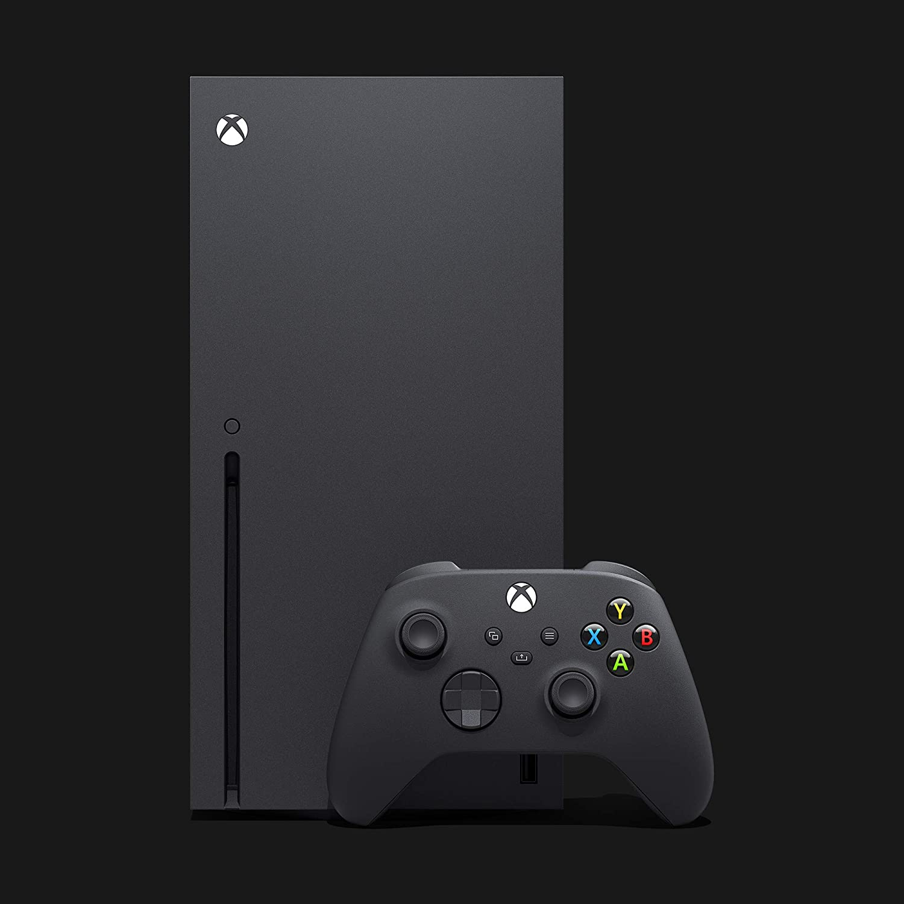
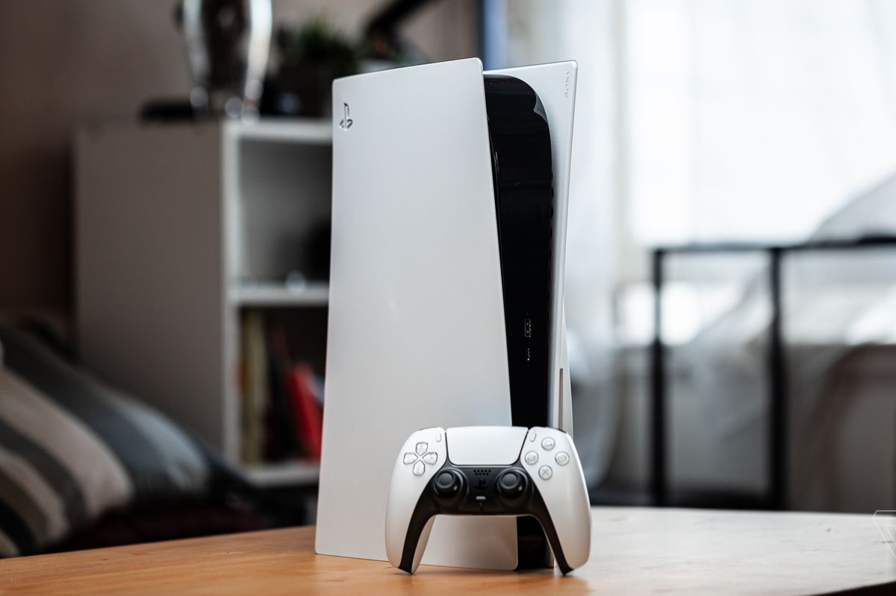
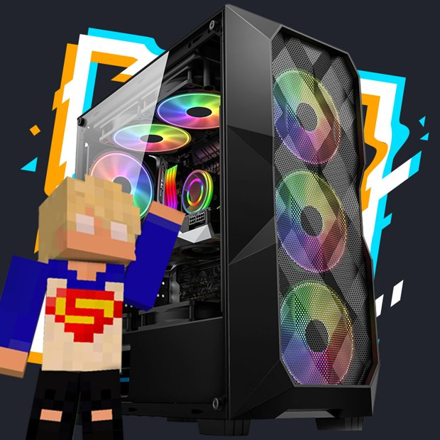
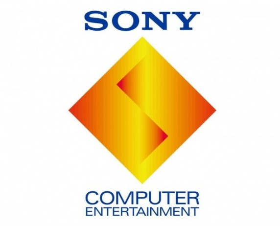
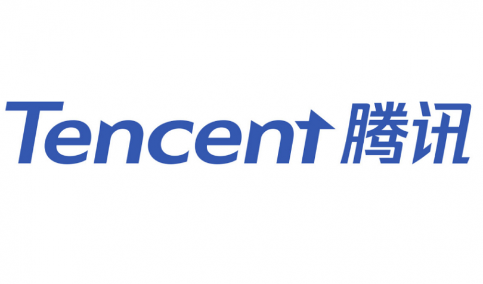

Destaques
Resident Evil 4 Remake
Sobre: Resident Evil 4, conhecido no Japão como Biohazard RE:4 (バイオハザード RE:4 Baiohazādo Fō?), é um futuro jogo eletrônico de survival horror desenvolvido e publicado pela Capcom. É um remake de Resident Evil 4, lançado originalmente em 2005 para o Nintendo GameCube. Está previsto para ser lançado em 24 de março de 2023 para Microsoft Windows, PlayStation 4, PlayStation 5 e Xbox Series X/S. A trama seguirá Leon S. Kennedy, o agente especial do governo dos Estados Unidos, que é enviado em uma missão para resgatar Ashley Graham, filha do presidente americano, que foi raptada por uma seita macabra.
Publisher: Capcom
Lançamento: 24 de Março, 2023
Gênero: Terror, Aventura, Sobrevivência
Avaliação: Não avaliado
Lançamentos
Marvel's Spider-Man
Nota 97
Mais Detalhes...
FIFA 23
Nota 75
Mais Detalhes...
Valkyrie Elysium
Nota 69
Mais Detalhes...
Tribes of Midgard
Nota 65
Mais Detalhes...
F1 Manager 2022
Nota 96
Mais Detalhes...
Soul Hackers 2
Nota 87
Mais Detalhes...
Plataformas
Xbox Series X
Principais Jogos
- Gotham Knights
- Call of Duty: Modern Warfare 2
- Forza Motorsport
Mais detalhes...
PlayStation 5
Principais Jogos
- Elden Ring
- Horizon: Forbidden West
- Spider-Man: Miles Morales
Mais detalhes...
PC
Principais Jogos
- Minecraft
- Counter-Strike: Global Offensive
- League of Legends
Mais detalhes...
Publishers
Sony Interactive Entertainment
Principais Jogos
- Spider-Man
- Detroit: Become Human/li>
- God of War Ragnarök
Mais detalhes...
Nintendo

Principais Jogos
- Animal Crossing: New Horizons
- The Legend of Zelda: Breath of the Wild/li>
- Mario Kart 8 Deluxe
Mais detalhes...
Tencent
Principais Jogos
- League of Legends
- Call of Duty: Mobile
- PUBG Mobile
Mais detalhes...
Sobre
Maxima Games é um portal de notícia sobre o mundo dos games e nossa missão é trazer o contéudo mais atualizado sobre esse universo.
O site foi idealizado em uma noite e construido naquela mesma madrugada, utilizando as mais avançadas técnicas de programação. O programador sênior responsável pelo projeto foi proibido de falar sobre o assunto porque as técnicas eram tão avançadas que ele causava risco para os outros. Por isso ele foi banido do sistema solar. Agora, ele frita pastel na feira (na feira da uma outra galáxia) e volta pra casa para degustar as notícias do universo gamer (do nosso universo) assim como todo mundo.
Editorial
Redação: Eustáquio Pesquisador
Pesquisa: Adevogado
Gerente Geral: É o Paaaaaaaaaaaulo
Redes Sociais: